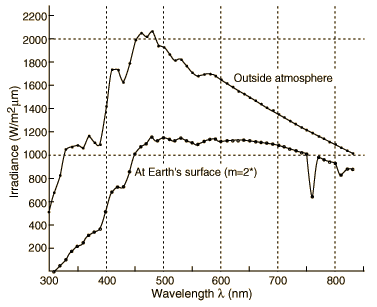
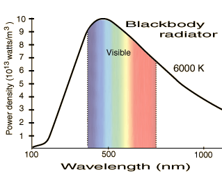

Solar Iradiance

This is a plot of the standard NASA data for the spectral irradiance of the solar disk in Watts/m2mm. The upper curve is formed by joining the data points for data outside the atmosphere. The lower curve is attributed to the Earth's surface under the condition described as "air mass 2". This designation corresponds to an angle of 60° between the zenith and the Sun. The data for the surface is from Brandhorst, et al.,Interim solar cell testing procedures for terrestrial applications, NASA Rep. TM X-71771 (Lewis Research Center) 1975. The points are actually calculated using the data from outside the atmosphere assuming a water content of 20 mmHg and ozone 3.4 mm Hg. The data for outside the atmosphere is from Thekaekara, M. P., Solar energy outside the earth's atmosphere, Solar Energy 14, 109 (1973).
| The iradiance outside the atmosphere can be compared with the blackbody curve at 6000K, a portion of which is reproduced at right. By examining the 400-700 nm nominal range of visible light, you can see that the solar irradiance is similar to that of a blackbody radiator. The curve at the surface is noticeably flatter, or more "white" if you take equal energy per wavelength as a definition of white. |  |
Wavelength
l(nm) | Outside
atmosphere | Surface
m=2 | Wavelength
l(nm) | Outside
atmosphere | Surface
m=2 |
| 300 | 514 | 0 | 570 | 1712 | 1134 |
| 310 | 689 | 1 | 580 | 1715 | 1147 |
| 320 | 830 | 50 | 590 | 1700 | 1148 |
| 330 | 1059 | 105 | 600 | 1666 | 1135 |
| 340 | 1074 | 177 | 610 | 1635 | 1137 |
| 350 | 1093 | 217 | 620 | 1602 | 1137 |
| 360 | 1068 | 255 | 630 | 1570 | 1137 |
| 370 | 1181 | 320 | 640 | 1544 | 1141 |
| 380 | 1120 | 344 | 650 | 1511 | 1140 |
| 390 | 1098 | 371 | 660 | 1486 | 1136 |
| 400 | 1429 | 530 | 670 | 1456 | 1127 |
| 410 | 1751 | 693 | 680 | 1427 | 1119 |
| 420 | 1747 | 737 | 690 | 1402 | 1114 |
| 430 | 1639 | 737 | 700 | 1369 | 1102 |
| 440 | 1810 | 867 | 710 | 1344 | 1089 |
| 450 | 2006 | 1022 | 720 | 1314 | 1071 |
| 460 | 2066 | 1089 | 730 | 1290 | 1058 |
| 470 | 2033 | 1107 | 740 | 1260 | 1040 |
| 480 | 2074 | 1167 | 750 | 1235 | 1026 |
| 490 | 1950 | 1133 | 760 | 1211 | 660 |
| 500 | 1942 | 1165 | 770 | 1185 | 997 |
| 510 | 1882 | 1147 | 780 | 1159 | 981 |
| 520 | 1833 | 1136 | 790 | 1134 | 965 |
| 530 | 1842 | 1159 | 800 | 1109 | 950 |
| 540 | 1783 | 1140 | 810 | 1085 | 850 |
| 550 | 1725 | 1120 | 820 | 1060 | 900 |
| 560 | 1695 | 1111 | 830 | 1036 | 898 |
|
Index
Vision concepts
Color vision
Reference
Wyszecki & Stiles
Ch 1 |